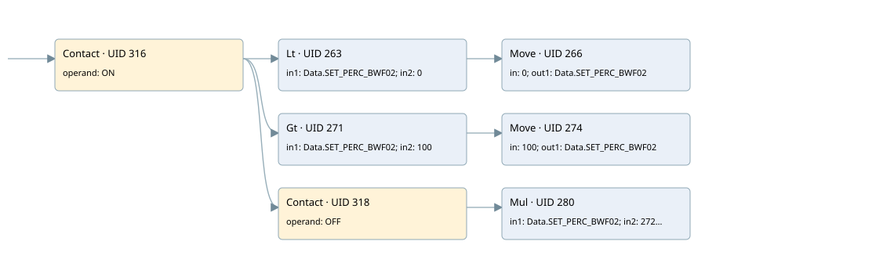

bwf02 client feeder
analog output conversion · 검색 색인 순서 4 · 원본 내부 NID 추정 4
백업 PLF 원본의 3082296 바이트 위치에서 복원한 XML. 검색 문서 1682의 객체 키 16102200a866000000000000와 연결했다. 이름 해석 13/13개. 남은 RefId는 상수 또는 미해석 참조다.
연결 구조 다시 그리기
원본 Part/PCon/Wire를 이용한 연결도다. TIA 화면의 래더 배치 또는 실행 결과를 재현한 그림은 아니다. 핀 연결은 아래 표와 원본 XML을 기준으로 읽는다. 노드 위에 마우스를 두면 피연산자 이름을 볼 수 있다.

접점·코일·블록과 피연산자
| Part UID | Gate | Negated 핀 | 연결 피연산자 |
|---|---|---|---|
| 316 | Contact | operand = ON | |
| 263 | Lt | in1 = Data.SET_PERC_BWF02; in2 = 0 | |
| 266 | Move | in = 0; out1 = Data.SET_PERC_BWF02 | |
| 271 | Gt | in1 = Data.SET_PERC_BWF02; in2 = 100 | |
| 274 | Move | in = 100; out1 = Data.SET_PERC_BWF02 | |
| 318 | Contact | operand = OFF | |
| 280 | Mul | in1 = Data.SET_PERC_BWF02; in2 = 272; out = BWF02_SP_FlowRate |
접점 경로를 펼친 조건식
Contact·O/A·비교기의 원본 연결을 읽기 쉽게 펼친 보조 해석이다. POWER는 전원 레일 시작을 뜻한다. 호출 블록·에지·타이머의 내부 동작과 다중 쓰기 순서는 이 표로 실행 검증하지 않았다. 미해석 핀과 RefId는 원문 연결표에서 확인한다.
| UID | 동작 | 대상 | 원본 접점 경로 | 내용 |
|---|---|---|---|---|
| 266 | Move | Data.SET_PERC_BWF02 | (ON AND [Data.SET_PERC_BWF02 < 0]) | Move 입력 0 |
| 274 | Move | Data.SET_PERC_BWF02 | (ON AND [Data.SET_PERC_BWF02 > 100]) | Move 입력 100 |
원본 배선 연결
| Wire UID | 동일 Wire 연결 끝점 |
|---|---|
| 320 | Powerrail {} ↔ Part 316.in |
| 297 | ORef 284 (ON) ↔ Part 316.operand |
| 317 | Part 316.out ↔ Part 263.pre ↔ Part 271.pre ↔ Part 318.in |
| 298 | ORef 285 (Data.SET_PERC_BWF02) ↔ Part 263.in1 |
| 299 | ORef 286 (0) ↔ Part 263.in2 |
| 300 | Part 263.out ↔ Part 266.en |
| 302 | ORef 287 (0) ↔ Part 266.in |
| 303 | Part 266.out1 ↔ ORef 288 (Data.SET_PERC_BWF02) |
| 304 | ORef 289 (Data.SET_PERC_BWF02) ↔ Part 271.in1 |
| 305 | ORef 290 (100) ↔ Part 271.in2 |
| 306 | Part 271.out ↔ Part 274.en |
| 308 | ORef 291 (100) ↔ Part 274.in |
| 309 | Part 274.out1 ↔ ORef 292 (Data.SET_PERC_BWF02) |
| 310 | ORef 293 (OFF) ↔ Part 318.operand |
| 319 | Part 318.out ↔ Part 280.en |
| 312 | ORef 294 (Data.SET_PERC_BWF02) ↔ Part 280.in1 |
| 313 | ORef 295 (272) ↔ Part 280.in2 |
| 314 | Part 280.out ↔ ORef 296 (BWF02_SP_FlowRate) |
식별자 해석 근거 13개
| ORef UID | RefId | 이름 | IdentXmlPart 파일 | 해석 방법 |
|---|---|---|---|---|
| 284 | 1 | ON | 0664-IdentXmlPart.xml | UID/RID + search-text + NID agreement |
| 285 | 30 | Data.SET_PERC_BWF02 | 0662-IdentXmlPart.xml | UID/RID + search-text + NID agreement |
| 286 | 5 | 0 | 0661-IdentXmlPart.xml | literal candidate: UID/RID/NID + nearby named declarations + search-text agreement |
| 287 | 5 | 0 | 0661-IdentXmlPart.xml | literal candidate: UID/RID/NID + nearby named declarations + search-text agreement |
| 288 | 30 | Data.SET_PERC_BWF02 | 0662-IdentXmlPart.xml | UID/RID + search-text + NID agreement |
| 289 | 30 | Data.SET_PERC_BWF02 | 0662-IdentXmlPart.xml | UID/RID + search-text + NID agreement |
| 290 | 12 | 100 | 0661-IdentXmlPart.xml | literal candidate: UID/RID/NID + nearby named declarations + search-text agreement |
| 291 | 12 | 100 | 0661-IdentXmlPart.xml | literal candidate: UID/RID/NID + nearby named declarations + search-text agreement |
| 292 | 30 | Data.SET_PERC_BWF02 | 0662-IdentXmlPart.xml | UID/RID + search-text + NID agreement |
| 293 | 14 | OFF | 0664-IdentXmlPart.xml | UID/RID + search-text + NID agreement |
| 294 | 30 | Data.SET_PERC_BWF02 | 0662-IdentXmlPart.xml | UID/RID + search-text + NID agreement |
| 295 | 16 | 272 | 0661-IdentXmlPart.xml | literal candidate: UID/RID/NID + nearby named declarations + search-text agreement |
| 296 | 34 | BWF02_SP_FlowRate | 0664-IdentXmlPart.xml | UID/RID + search-text + NID agreement |
검색 코드 보조 자료
참조 명칭을 찾기 위한 자료이며 실행 순서나 AND/OR 관계는 위 연결표로 확인한다.
"on" "data".set_perc_bwf02 0 move 0 "data".set_perc_bwf02 100 move 100 "data".set_perc_bwf02 "off" mul "data".set_perc_bwf02 272 "bwf02_sp_flowrate":p "data".set_perc_bwf02